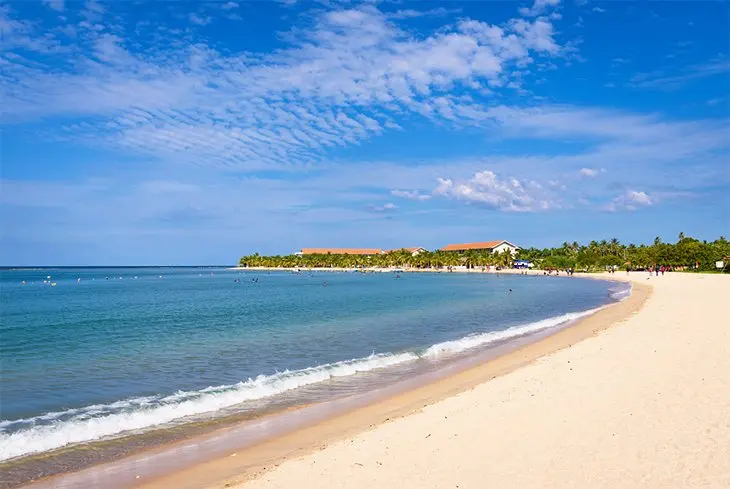
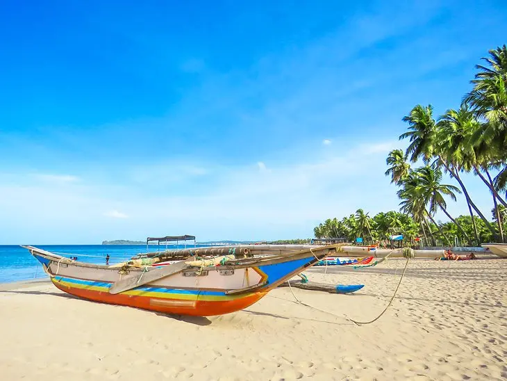

Arugam Bay

Arugam Bay is dramatically beautiful, with bright white sand and deep blue water gradually becoming green the closer you get to the shore. With that beauty comes some of the best surf breaks in Sri Lanka, and the beach is known as an international surf destination.The curving beach feels a bit like a Hawaiian beach - the area near the water slopes down, and there's a dry, sandy section, then rougher areas with shrubs and a tree line. Right on Arugam Bay, The Spice Trail is a cool, little luxury resort with individual villa accommodations.
Kalkudah Beach
This mile-long beach on Pasikuda Bay is perfect for swimming and wading. The surf is gentle, protected by a reef, unlike many beaches in Sri Lanka with rough surf. The water is also shallow, allowing you to walk out into the ocean for hundreds of yards. The sand is bright white and soft, with fine grains, and the beach is lined with coconut trees. For those who want a secluded getaway right on the water's edge, Karpaha Sands a is an excellent option that is both affordable and packed with amenities.
Nilaveli
Nilaveli Beach is a broad, sandy beach, lined with palm trees and dotted with fishermen's boats. Located on the northeast part of Sri Lanka, it's a 30-minute drive from the city of Trincomalee. This tiny island has calm beaches with gentle surf due to its own small reef. The Anilana Nilaveli sits right on Nilaveli Beach.